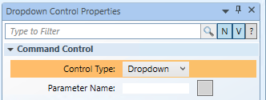

Draw and Configure a Dropdown Command Control
The following instructions are just one example of how a dropdown command control can be drawn and configured to send commands from within a graphic.
- You have reviewed or completed the Preparing to Create Controls to Command Objects workflow.
- To create a new command control element on a graphic, from the File menu, select New Graphic
 .
. - Click Command Control
 , and draw a rectangular shape on the canvas.
, and draw a rectangular shape on the canvas. - From the Property View (Command Control Properties) expand the Command Control properties, and from the Control Type drop-down menu, select Dropdown.

- The defined rectangle on the canvas changes to a dropdown template consisting of an image with a selection field and a selection arrow.
- In the Parameter Name field, type the data point’s parameter name obtained from the Models & Functions Command Configuration table. This field is case-sensitive. This property will be the same Parameter property later defined in the Command and Navigation section.
- For this example, type Value.